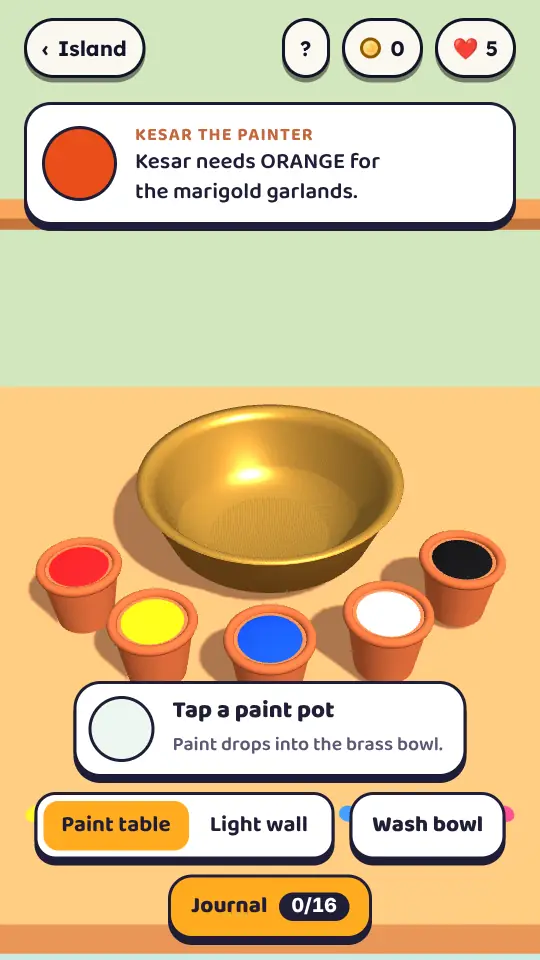

All labs › Colour › Colour Studio
Colour lab · Kesar's Colour Studio
Colour Studio
रंगों की कार्यशाला · रंग और रोशनी मिलाओ
Mix paints and mix coloured light in a studio, and find out why the two give different answers. Every new colour goes into a collection of discoveries.
- Colour
- All ages
- 16 discoveries
- English · हिंदी
- Free, no sign-up

How it works
Mix paint, then mix light
- Pick two paint colours and mix them. Red and yellow paint make orange.
- Now switch to light and mix red and green light. They make yellow, and it gets brighter.
- Each new mix you find goes in your discoveries.
Stuck? Every level has a hint, and a "Show me" walk-through.
Why it works
The big idea
Paint is like a sieve: every paint you add soaks up (subtracts) more of the light, so mixes get darker. Light is like adding torches together: every beam you add puts more light in, so red and green light make a bright yellow.
What children learn
Skills in this lab
- Primary and secondary colours in paint
- Why mixing light (additive) differs from mixing paint (subtractive)
- How screens make every colour from red, green and blue
For parents and teachers
Colour Studio is open to every player, whatever their age band.
Curio Island is free in the browser with no sign-up. Progress is saved on this device only. Ads are child-safe and non-personalised, and never appear inside a lab.
Part of Kesar's Colour Studio on the island. 16 discoveries to finish.